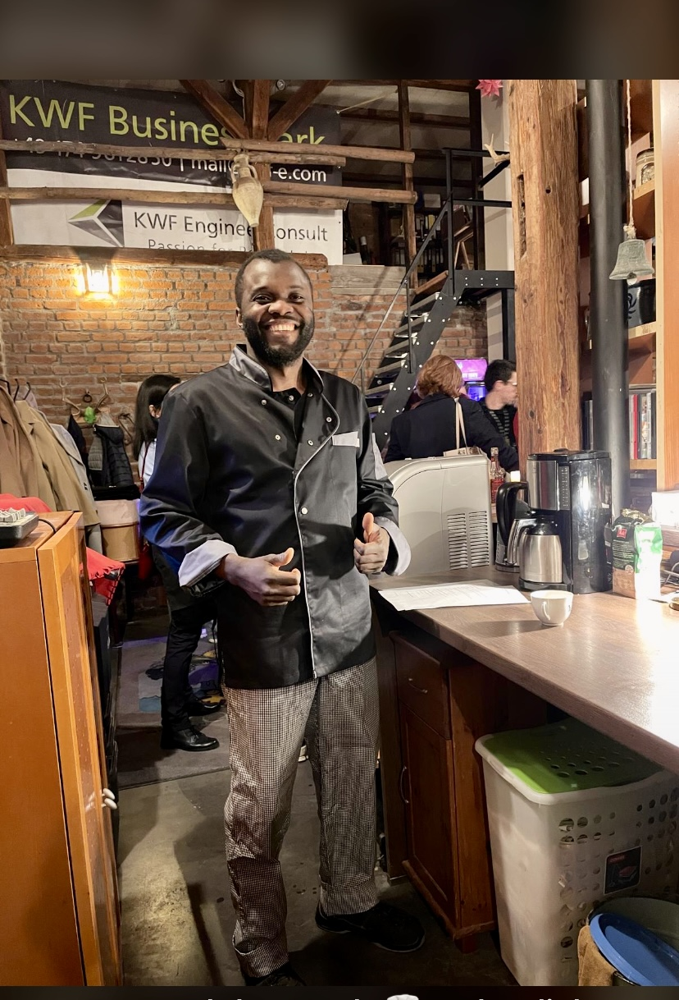

NUTHEM analysiert komplexe Geschäftsprobleme, gestaltet tragfähige
Organisations-, Kooperations- und Lösungsmodelle und begleitet
Veränderung von der Entscheidung bis in den operativen Alltag.
North StarMake it work.
Nicht bei der Empfehlung aufhören.
Vier Perspektiven. Ein umsetzbares Gesamtbild.
Beratung für Veränderungen, die mehrere Ebenen gleichzeitig betreffen.
Komplexe Vorhaben scheitern selten an einer einzigen Fachfrage. Sie
brauchen ein belastbares Zusammenspiel aus wirtschaftlicher Logik,
Organisation, Menschen, Prozessen und Technologie.
01Business
Business & Transformation Advisory
Komplexe Geschäftsprobleme strukturieren, Ursachen und wirtschaftliche
Auswirkungen greifbar machen und tragfähige Handlungsoptionen entwickeln.
Problem-, Ursachen- und Wirkungsanalyse
Lösungsoptionen und Entscheidungsgrundlagen
Transformationsplanung und Umsetzungsbegleitung
Ergebnis: Klarheit über Richtung, Prioritäten und nächsten Schritt.
02Organization
Strategic Partnerships & Organizational Design
Zusammenarbeit so gestalten, dass aus gemeinsamen Interessen eine
arbeitsfähige Struktur mit klaren Entscheidungen und Verantwortungen wird.
Kooperations- und Governance-Modelle
Rollen, Verantwortlichkeiten und Entscheidungsrechte
Gemeinsame Operating Models
Vertriebsansätze und Vorbereitung von Vertragsverhandlungen
Ergebnis: Ein belastbares Modell für Steuerung und Zusammenarbeit.
03People
Change Management & Stakeholder Alignment
Betroffene früh einbinden, Interessen und Widerstände verstehen und
Veränderung kommunikativ wie organisatorisch tragfähig machen.
Stakeholderanalyse und Beteiligungsformate
Moderation und Kommunikationsplanung
Adoption und organisatorische Implementierung
Ergebnis: Gemeinsames Verständnis und handlungsfähige Beteiligte.
04Technology
Business Analysis & Technology Enablement
Geschäftsziele in Prozesse, Anforderungen und passende digitale
Lösungen übersetzen – mit Blick auf Nutzen, Integration und Umsetzung.
Prozessanalyse und Requirements Engineering
System- und Tool-Auswahl
Lösungsdesign und Implementierungsbegleitung
Ergebnis: Eine Lösung, die fachlich passt und operativ funktioniert.
Von der Diagnose bis zur Stabilisierung
Die Fähigkeiten hinter einer belastbaren Transformation.
Die Leistungsfelder greifen auf dieselben Delivery-Fähigkeiten zurück:
Probleme verstehen, Anforderungen übersetzen, Lösungen gestalten,
Entscheidungen treffen und Umsetzung verlässlich steuern.
01
↳
Analyse
Geschäftskontext, Prozesse, Stakeholder, Daten und Ursachen verstehen.
Klarheit02
≡
Anforderungen
Bedarfe strukturieren, priorisieren und zwischen Fachbereich und IT übersetzen.
Alignment03
◇
Lösungsarchitektur
Zielprozesse, Operating Model und eine tragfähige Lösung entwerfen.
Design04
⌁
Tool-Auswahl
Systeme entlang echter Anforderungen, Nutzen und Umsetzbarkeit bewerten.
Fit05
→
Implementierung
Delivery, PMO, Testing, Rollout, Governance und Adoption begleiten.
Execution06
∞
Betreuung
Ergebnisse messen, Systeme stabilisieren und Prozesse weiter verbessern.
Optimize
NUTHEM Approach
Understand. Design. Build. Implement. Optimize.
01Understand
02Design
03Build
04Implement
05Optimize
Methodischer Ansatz in EntwicklungMBOA™ by NUTHEM
Modernize · Build · Optimize · Advance
Der Ansatz wird derzeit fachlich konkretisiert und nicht als extern validierter Standard dargestellt.
Beruflicher Hintergrund
Erfahrung aus Transformation, Technologie und Unternehmertum.
Die folgenden Stationen beschreiben persönliche Projekterfahrung und
unternehmerischen Hintergrund. Sie sind keine pauschalen
NUTHEM-Kundenreferenzen.
01
AXA / Porsche Assistance
Internationale Transformations- und Projektkoordination in einem länderübergreifenden Organisationsumfeld.
02
HSBC
Business Analysis und IT-Projektmanagement im Plattformumfeld.
03
ERGO
PMO und Projektkoordination in einem komplexen Unternehmensumfeld.
04
INNOS / CharIN
Internationale Technologie- und Arbeitsgruppenkoordination sowie Account und Stakeholder Management.
05
LIMBÉ GmbH
Unternehmerische Erfahrung aus Aufbau, Weiterentwicklung und operativer Steuerung eines Unternehmens.
NUTHEM Perspective
Organizational Design · Partnerships · Change
Wenn Organisationen zusammenarbeiten sollen: Warum ein Vertrag allein nicht ausreicht
Ein gemeinsames wirtschaftliches Interesse kann eine Zusammenarbeit
begründen. Arbeitsfähig wird sie erst, wenn Strategie, Governance,
Menschen und operativer Alltag zusammenpassen.
01
Gemeinsame Interessen sind nur der Ausgangspunkt.
Organisationen können dasselbe Ziel verfolgen und trotzdem unterschiedliche Erwartungen, Zeithorizonte und Erfolgsmaßstäbe haben. Diese Unterschiede müssen vor der Umsetzung sichtbar werden.
Wer darf was entscheiden? Was geschieht bei Konflikten? Welche Themen gehören ins Tagesgeschäft, welche in ein Steuerungsgremium? Ohne diese Klarheit entstehen Wartezeiten und informelle Machtstrukturen.
03
Bestehende Identitäten und Strukturen wirken weiter.
Kooperation beginnt nicht auf einem leeren Blatt. Geschichte, Rollen, Routinen und Zugehörigkeiten prägen, was Menschen akzeptieren und wie sie Veränderungen interpretieren.
04
Change Management beginnt vor der Implementierung.
Stakeholder sollten nicht erst informiert werden, wenn die Lösung feststeht. Beteiligung, Kommunikation und Umgang mit Widerständen gehören bereits in Analyse und Design.
05
Das Operating Model verbindet Strategie und Alltag.
Ein tragfähiges Modell beschreibt Leistungen, Prozesse, Rollen, Entscheidungen, Schnittstellen und Steuerung. Erst dadurch wird aus einer Vereinbarung wiederholbare Zusammenarbeit.
Ein Vertrag schafft Verbindlichkeit. Ein Operating Model schafft Arbeitsfähigkeit.

Business×Tech
Persönlich. Strukturiert. Umsetzungsnah.
Ich arbeite dort, wo Business und Technologie sich verstehen müssen.
Ich bin Bristol Emassi – Mathematiker,
Unternehmer und Berater mit Erfahrung in Business Analysis,
Requirements Management, PMO und digitalen Transformationsprojekten.
Sprachen: Beratung und Zusammenarbeit auf Deutsch, Englisch und Französisch.
Mein Blick ist analytisch, meine Arbeit pragmatisch: das eigentliche
Problem verstehen, Entscheidungen belastbar machen und die Umsetzung
so strukturieren, dass Veränderung nicht im Konzept stecken bleibt.
Dabei verbinde ich Business Analysis, Organisationsdesign,
Stakeholderarbeit, Technologie und Delivery.